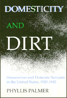

<body bgcolor="#FFFFFF" text="#000000" link="#0000FF" vlink="#CC0000" alink="#CC0000"><center><hr width="350" size="1" align="center" noshade>Examining the cultual norms of women after Suffrage to define labor based on color<hr width="350" size="1" align="center" noshade><p><a href="https://cdcshoppingcart.uchicago.edu/Cart/ChicagoBook.aspx?ISBN=9780877225850&&PRESS=temple" target="_top">Buy this book!</a> | <a href="https://cdcshoppingcart.uchicago.edu/Cart/Cart.aspx?PRESS=temple" target="_top">View Cart</a> | <a href="https://cdcshoppingcart.uchicago.edu/Cart/Cart.aspx?PRESS=temple" target="_top">Check Out</a></p><p></p></center><!--none//--><h1>Domesticity and Dirt</h1>
<H2>Housewives and Domestic Servants in the United States, 1920-1945</H2>
<h3>Phyllis Palmer</h3>
<P>cloth 0-87722-585-0 $34.95, Jan 90, <FONT COLOR=#990033>Out of Print</FONT>
<br>paper 0-87722-901-5 $26.95, Aug 91, <FONT COLOR=#990033>Available</FONT>
<br>Electronic Book 1-43990-554-1 $26.95 <FONT COLOR=#990033>Out of Print</FONT>
<BR> 248 pp
</P><BLOCKQUOTE><I>"Palmer examines how white women learned their whiteness and how domestic service degraded working-class women...while it elevated the status of middle-class women. She concludes with a sophisticated analysis of dichotomies between good and bad, clean and dirty, pure and sexual women, infusing her history of gender, race and class subordination with contemporary feminist object relations theory."</I>
<br>&#151<b><I>Women's Review of Books</I></b><I></I></BLOCKQUOTE>
<p>In the era after Suffrage, white middle-class housewives abandoned moves toward paid work for themselves, embraced domestic life, and felt entitled to servants. In <I>Domesticity and Dirt</I>, Phyllis Palmer examines the cultural norms that led such women to take on the ornamental and emotional elements of the job while relegating the hard physical work and demeaning service tasks to servants&#151mainly women of color. Using novels, films, magazine articles, home economics texts, and government-funded domestic training course manuals, the author details cultural expectations about middle-class homelife.
<p>Palmer describes how government-funded education programs encouraged the divisions of labor and identity and undercut domestic workers� organized efforts during the 1930s to win inclusion in New Deal programs regulating labor conditions. Aided by less powerful black civil rights groups, without the assistance of trade unions or women�s clubs, domestics failed to win legal protections and the legal authority and self-respect these brought to covered workers. The author also reveals how middle- class women responded ambivalently to the call to aid women workers when labor reforms threatened their domestic arrangements.
<p>Throughout her study, Palmer questions why white middle-class women looked to new technology and domestic help to deal with cultural demands upon "the perfect housewife" rather than expecting their husbands to help. When the supply of servants declined during the 1950s, middle-class housewives were left isolated with lots of housework. Although they rapidly followed their servants into paid work outside the home, they remain responsible for housework and child care.
<BR>&nbsp;<h2>Reviews</h2>
<p><I>"Phyllis Palmer examines how middle-class women took jobs outside the home and hired servants&#151mostly women of color&#151to run their households.... Her ground-breaking study, drawing on home economic texts, government-funded domestic training course manuals, novels, films and magazine articles, shows how this perpetuated the myth of the perfect housewife and did not challenge men to join in running the home. Unflinching in her analysis of domestic workers' subjugation and lack of power or protection."</I>
<br>&#151<b><I>New Directions for Women</I></b>
<p><I>"[Palmer's] work is path-breaking.... [She] is right on target in focusing on the contradictions that have lain at the heart of our national domestic life."</I>
<br>&#151<b><I>The Washington Post</I></b>
<p><I>"In a well-written scholarly examination of the interwar years, Palmer elaborates on the perspectives and experiences of both middleclass employers and the workers they exploited, playing out the implications of a domestic work system based upon class and race."</I>
<br>&#151<b><I>Library Journal</I></b>
<BR>&nbsp;<h2>Contents</h2><P>
<p>Preface
<br>Acknowledgments
<br>1. Domestic Work Between the Wars
<br>2. The Housewife in a Modern Marriage
<br>3. The Businessman's Wife at Work
<br>4. The Domestic Does Her Job
<br>5. Education for the Vocation of Housework
<br>6. Negotiating the Law of Service
<br>7. Dirt and Division Among Women
<br>Afterword
<br>Notes
<br>Index
</P><BR>&nbsp;<H2>About the Author(s)</H2>
<P><b>Phyllis Palmer</b> is Associate Professor of Women�s Studies and American Studies at The George Washington University.</P>
<BR><H2>Subject Categories</H2>
<p><A HREF="/tempress/women.html" TARGET="_top">Women's Studies</a>
<BR><A HREF="/tempress/american.html" TARGET="_top">American Studies</a>
</p>
<BR><h2 class="inpageheading">In the series</H2>
<P><I><a href="http://www.temple.edu/tempress/women_political.html" onMouseOver="window.status='Click for other books in this series!'; return true;" onMouseOut="window.status=''; return true;" target="_top">Women in the Political Economy</a></i>, edited by Ronnie J. Steinberg.
</p><p>No longer active.<p><i>Women in the Political Economy</i>, edited by Ronnie J. Steinberg, includes books on women and issues of work, family, social movements, politics, feminism, and empowerment. It emphasizes women's roles in society and the social construction of gender and also explores current policy issues like comparable worth, international development, job training, and parental leave.</p>
<p align="center"><a href="https://cdcshoppingcart.uchicago.edu/Cart/ChicagoBook.aspx?ISBN=9780877225850&&PRESS=temple" target="_top">Buy this book!</a> | <a href="https://cdcshoppingcart.uchicago.edu/Cart/Cart.aspx?PRESS=temple" target="_top">View Cart</a> | <a href="https://cdcshoppingcart.uchicago.edu/Cart/Cart.aspx?PRESS=temple" target="_top">Check Out</a></p><p><font face="Arial" size="1"><a href="copyright.html" onMouseOver="window.status='Web Copyright Policy';return true;" onMouseOut="window.status=''" title="Web Copyright Policy">&copy;</a> 2015 <a href="http://www.temple.edu" target="new" onMouseOver="window.status='Link to Temple University home page';return true;" onMouseOut="window.status=''" title="Link to Temple University home page">Temple University</a>. All Rights Reserved. http://www.temple.edu/tempress/titles/632_reg.html</font></p>